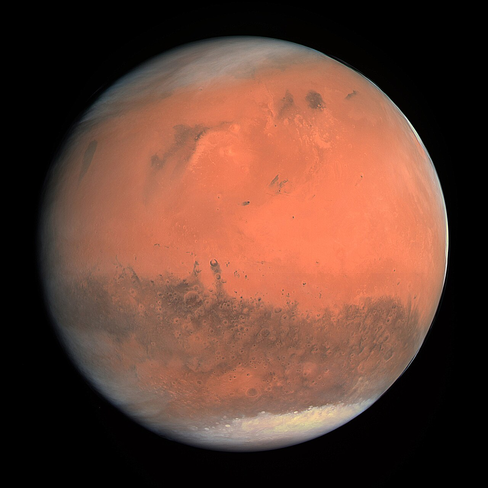

Marte

Descripción
Conocido como el "Planeta Rojo", Marte es el cuarto planeta en orden de distancia al Sol.
Datos interesantes
- Su color rojizo se debe al óxido de hierro abundante en su superficie.
- Alberga el Monte Olimpo, el volcán más grande de todo el sistema solar.
- Posee dos lunas pequeñas llamadas Fobos y Deimos.